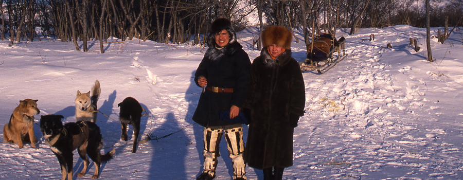

This Website
This website is being developed by the participants of the NSF project "Audio-Visual Documentation of Itelmen." The group includes scholars from the U.S., Japan and Russia -- linguists, anthropologists, and software developers -- as well as members of the Itelmen community on Kamchatka. The site will contain audio and video recordings, with texts and scholarly analysis; it will also have an Itelmen dictionary and a blog with discussions and reports on current events. Visit often, both to browse and to contribute.
Itelmen
Originally Itelmen was spoken throughout Kamchatka, and possibly also in the northern Kuril Islands. Vladimir Atalsov, who annexed Kamchatka and established military bases in the religion, estimated in 1697 that there were about 20,000 ethnic Itelmens. This population has now shrunk to a handful of older people who still remember the language. Our goal is to preserve their knowledge, make it available to both the local community and the world community of scholars, and help revitalization efforts.